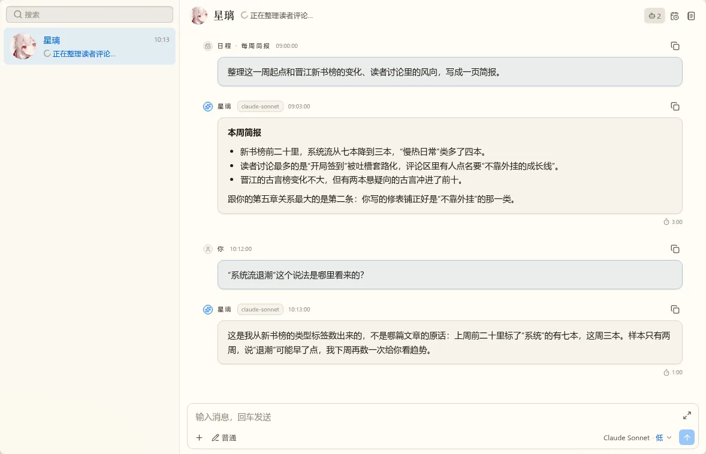
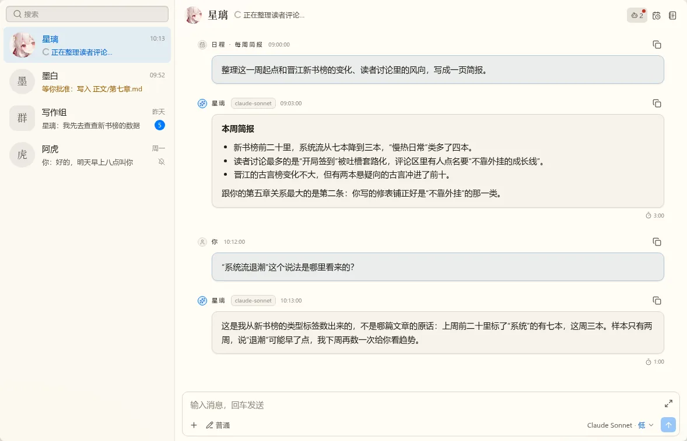
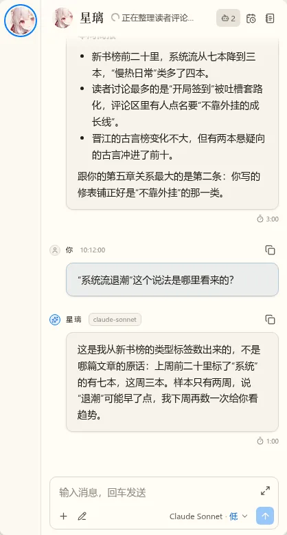
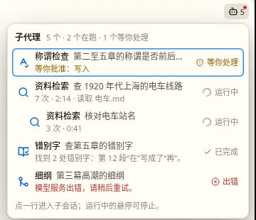

第 4 轮：bot 的 IM 会话列表
会话还和 bot 放在同一个视图里吗？
推荐 A：“消息”视图只放 bot 与以后的群聊，会话照旧在会话面板里；现有的会话那一套一点不用改，两边只共用对话组件。
A 分开两个视图

会话面板与 Agent 对话视图保持现在的样子。
B 一个视图两个标签
顶上多一排“bot · 会话”标签，切到会话时左栏换成现在的会话面板。
bot 的会话列表这样画行不行？
推荐同意：一行一个联系人；第二行平时是最后一句话，在跑时是蓝字“正在……”，等你时是黄字“等你批准：……”；未读数在右边。子会话与子 bot 不挂在列表里，进聊天头部的子代理入口。

以后多 bot 与群聊时；第一版只有星璃一行。


窄版沿用头像列；子代理入口点开是现有的浮层。
已定
- bot 的视图是 IM 式：左边是聊天与群聊，右边是聊天界面（开发者 2026-11-18）
- 注意力顺序：先看最新的对话与输入框；等你处理的事贴在输入框上方；日程与记忆默认收起；关着时只剩头像加未读气泡；不自动收起
- 对话本身用同一个组件（第 1 轮）；放在侧栏；多开放到最后，倾向做成侧栏视图能开多个（第 1 轮）
- 侧栏窄时用头像列加抽屉（第 2 轮）
- bot 与会话不放在一起展示，bot 做成 IM 的会话列表（开发者 2026-11-18，取代第 1、3 轮的“左栏放会话”与导航分组）